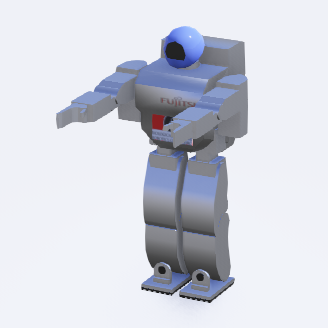

My Project Documentation
Introduction
Welcome to the documentation for My Project. This project is designed to help you understand and use our tools effectively.
Features
Feature 1: Provides a detailed description of feature 1.
Feature 2: Highlights feature 2 with some emphasis.
Code Example
Here is an example of how to use our tool:
def greet(name):
print(f"Hello, {name}!")
External Links
Visit the official website for more information.
Internal Links
See Usage for detailed usage instructions.
Images

Tables
Header 1 |
Header 2 |
|---|---|
Row 1, Col 1 |
Row 1, Col 2 |
Row 2, Col 1 |
Row 2, Col 2 |
Usage
这是有底色的文本
This is a paragraph of text inside a box with a background color.

Figure 1: This is a shared caption for both images.